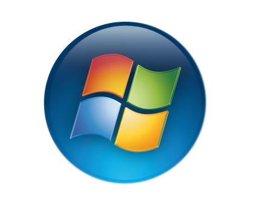

Windows
Microsoft Windows è una famiglia di ambienti operativi e sistemi operativi dedicati ai personal computer, alle workstation, ai server e agli smartphone. Il sistema operativo si chiama così per via della sua interfaccia di programmazione a finestre.
In particolare Microsoft Windows nasce come ambiente operativo per i sistemi operativi MS-DOS e PC DOS , e diventa sistema operativo con Windows NT e Windows 95. E' software proprietario della Microsoft Corporation che lo rende disponibile esclusivamente a pagamento. In particolare attualmente Microsoft Corporation commercializza solo sistemi operativi appartenenti alla famiglia Microsoft Windows: Windows 8.1 per i personal computer e le workstation, Windows Server 2012 per i server, Windows Phone per gli smartphone, e Windows CE per i Pocket PC e i Portable Media Center.

Home